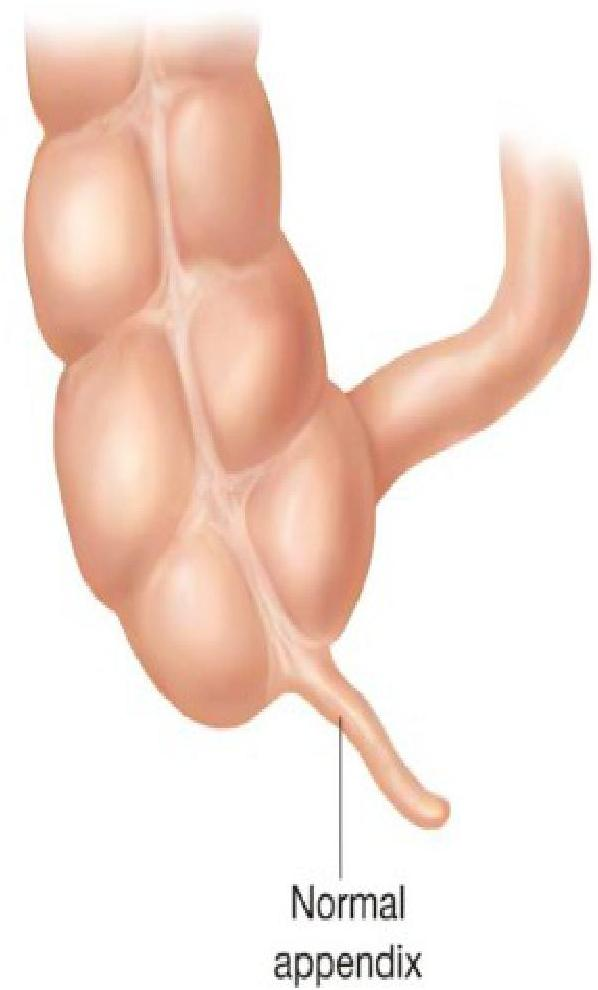
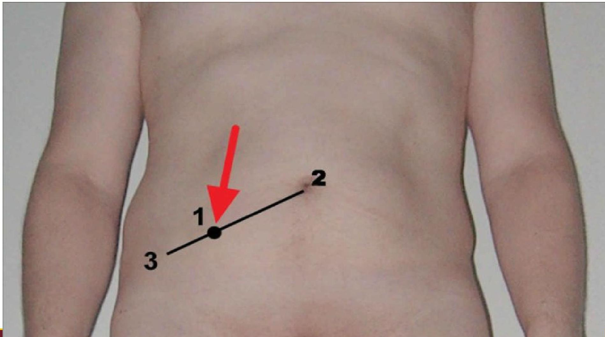

🚧
Topic 05
Intestinal Obstruction & Appendicitis
01
Intestinal Obstruction
Definition: Intestinal obstruction exists when blockage prevents the normal flow of intestinal contents through the intestinal tract.
Types of Obstruction
| Type | Description | Causes |
|---|---|---|
| Mechanical | Intraluminal obstruction or mural obstruction from pressure on the intestinal wall. | Intussusception, polypoid tumors, neoplasms, stenosis, strictures, adhesions, hernias, abscesses. |
| Functional | Intestinal musculature cannot propel contents along the bowel. | Amyloidosis, muscular dystrophy, diabetes mellitus, Parkinson’s disease. Can be temporary (post-surgery manipulation). |
Common Locations & Causes
- Small Intestine: Most common site. Causes: Adhesions (most common), hernias, neoplasms.
- Large Bowel: Most common in sigmoid colon. Causes: Carcinoma, diverticulitis, IBD, benign tumors.
02
Pathophysiology & Manifestations
Pathophysiological Process
- Contents, fluid, and gas accumulate above the obstruction.
- Abdominal distention reduces gastric secretion absorption.
- Increased intraluminal pressure decreases venous/arteriolar capillary pressure.
- Result: Edema, congestion, necrosis, and eventual rupture/perforation (peritonitis).
Systemic Complications
- Metabolic Alkalosis: From reflux vomiting (loss of Hydrogen ions and Potassium).
- Dehydration & Acidosis: From loss of water and sodium.
- Hypovolemic Shock: From acute fluid losses.
Clinical Manifestations
- Initial: Crampy pain that is wavelike and colicky.
- Passage of blood and mucus but no fecal matter or flatus.
- Vomiting: Stomach contents first, then bile-stained duodenal contents. If obstruction is in the ileum, fecal vomiting occurs.
- Dehydration: Intense thirst, drowsiness, malaise, parched tongue.
- Abdominal Distention: More marked the lower the obstruction is.
03
Management of Obstruction
Medical & Surgical Management
- Decompression: Nasogastric (NG) tube is successful in most cases.
- Fluid Resuscitation: IV fluids to replace water, sodium, chloride, and potassium before surgery.
- Surgery: Indicated for complete obstruction or strangulation/necrosis. Procedures include hernia repair, dividing adhesions, or bowel resection with anastomosis.
Nursing Management
Nursing Care Plan
- Maintain function of the NG tube.
- Assess and measure NG output.
- Assess for fluid and electrolyte imbalance.
- Monitor nutritional status.
- Assess Improvement: Return of bowel sounds, decreased distention, reduction in pain, passage of flatus/stool.
- Report: Discrepancies in intake/output, worsening pain/distention, increased NG output.
04
Appendicitis
Definition: Inflammation of the appendix, a pouch on the colon. It becomes inflamed and filled with pus, causing severe pain.

Fig. 5.1: Anatomy of the Appendix
Pathophysiology
- The appendix is prone to obstruction and infection because its lumen is small and it empties inefficiently.
- It becomes kinked or occluded by a fecalith (hardened mass of stool), tumor, or foreign body.
- Inflammatory process increases intraluminal pressure, initiating pain.
05
Clinical Manifestations
Symptoms
-
Pain Progression: Starts as vague epigastric or periumbilical pain (visceral) -> progresses to Right Lower Quadrant (RLQ) pain (parietal/sharp).
-
McBurney’s Point: Local tenderness elicited at this specific point in the RLQ (see Fig 5.2).
-
Rebound Tenderness: Production or intensification of pain when pressure is released.
-
Rovsing’s Sign: Palpating the left lower quadrant causes pain in the right lower quadrant.
-
Associated Symptoms: Low-grade fever, nausea/vomiting, anorexia (loss of appetite).

Fig. 5.2: Location of McBurney's Point
Complications
Perforation is the major complication (generally 24 hours after onset). Symptoms include:
- Fever ≥ 37.7°C (100°F)
- Toxic appearance
- Continued/worsening pain
- Can lead to Peritonitis, Abscess, or Portal Pylephlebitis (septic thrombosis).
06
Management of Appendicitis
Medical & Surgical Management
- Immediate Surgery: Appendectomy is typically indicated (laparotomy or laparoscopy).
- Pre-op: IV fluids and antibiotics to correct fluid imbalance and prevent sepsis.
- Abscess: If perforated with abscess, surgeon may drain abscess first, treat with antibiotics, and perform appendectomy later.
Nursing Management
Contraindications
NEVER administer a laxative, cathartic, or enema when a person has fever, nausea, and abdominal pain. It can lead to perforation of the inflamed appendix.
Pre-operative Care
- IV infusion for fluid replacement.
- Antibiotic therapy.
- Nasogastric tube if paralytic ileus is evident.
Post-operative Care
- Positioning: High Fowler’s position to reduce tension on incision and abdominal organs.
- Pain Management: Opioids (e.g., morphine sulfate).
- Diet: Oral fluids when tolerated; food provided when normal bowel sounds return.
- Discharge: Often on day of surgery if uncomplicated. Suture removal in 5-7 days. Heavy lifting avoided for 2-4 weeks.
Knowledge Check
Test Your Understanding
Complete this quiz to assess your comprehension of Topic 05: Intestinal Obstruction & Appendicitis.
Loading quiz...